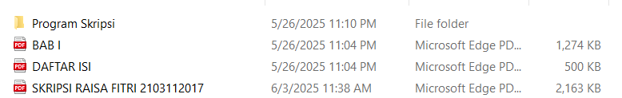

1. Setelah Kompre
- Jika tanpa revisi, langsung minta tanda tangan Dekan (di dekanat).
- Isi pengajuan TA di portal.
- Lembar pernyataan harus bermaterai 10K dan ditandatangani.
2. Pengambilan Berita Acara
- Skripsi lengkap (PDF + scan tanda tangan pembimbing, penguji, dekan, lembar pernyataan).
- BAB 1 (PDF)
- Daftar Isi (PDF, tanpa daftar tabel/gambar)
- File Program dalam folder
ZIP → Masukkan ke Flashdisk

Setelah itu, berita acara didapat dalam bentuk PDF dalam Flashdisk
🎓 BERKAS YUDISIUM
Beli syarat yudisium di samping jurusan. Siapkan 3 MAP PINK.
📁 BERKAS 1 (TRANSKIP ASLI)
- Surat Pernyataan Bermaterai Asli (Digunakan Untuk Penulisan Di Transkrip Nilai) (1 Lembar) UNDUH
- Fotocopy Berita Acara Ujian Sarjana (1 Lembar)
- Fotocopy Cover Skripsi (1 Lembar)
- Translate Judul Skripsi Ditandatangani Pembimbing (1 Lembar)
- KHS Asli Atau Legalisir (Jika KHS Asli Tidak Ada) Dari Semester Awal Sampai Akhir (Tidak wajib lengkap)
- Fotocopy Ijazah SMA Yang Dilegalisir Cap Basah (1 Lembar)
- Transkrip Nilai Sementara Yang Di Cap Basah (1 Lembar)
- Fotocopy SK. Masa Langkau Dan Perpanjangan Masa Studi Bagi Mahasiswa Yang Telah Lewat Masa Studinya
- Fotocopy Kartu Keluarga (1 Lembar)
- Fotocopy KTP (1 Lembar)
📌 Ada beberapa yang perlu 2 rangkap seperti: berita acara/ijazah/ktp/dll (Siapkan aja jaga-jaga 2 rangkap persyaratannya)
📂 BERKAS 2 (IJAZAH) - 1 ASLI & 1 FOTOCOPY
- Pas Foto Cetak Studio Berwarna Latar Belakang Merah Menggunakan Jas Ukuran 3x4 (2 Lembar Di Bungkus Dengan Plastik) (Cetak Photo Wajib Kertas Glossy)
- Ijazah SMA Yang Dilegalisir (2 Lembar 1 Asli, 1 Photocopy)
- Berita Acara Ujian Sarjana Yang Di Beri Photo (2 Lembar 1 Asli, 1 Photocopy)
- Rekap Pembayaran SPP (1 Lembar)
- Fotocopy Cover Skripsi (1 Lembar)
- Memperlihatkan Skripsi Yang Telah Ditandatangani Dekan Dan Seluruh Penguji Serta Pembimbing (Discan terus print)
- Fotocopy Sertifikat TOEFL (1 Lembar)
- Fotocopy Bukti Penyerahan Skripsi Ke Perpustakaan Unri (1 Lembar) -> ni ges urus disini ga lama kok
- Fotocopy Bebas Pustaka UPT Perpustakaan Dan FMIPA (1 Lembar)
- Fotocopy Kartu Keluarga 1 Lembar (Harus Jelas)
- Fotocopy KTP/ Tidak Di Potong Dan Harus Jelas (2 Lembar)
- Fotocopy Akte Kelahiran Harus Jelas (1 Lembar)
- Surat Pernyataan Bermaterai (Digunakan Untuk Penulisan Di Ijazah) (1 Asli, 1 Photocopy) UNDUH
✂️ FOTO BAGIAN PUTIH NYA DI POTONG YAAAA
4. Pendaftaran Yudisium di Portal
Semua file harus PDF & di bawah 500KB
- KTP, KK, Ijazah SMA, Rekap UKT
- Bagian KOPMA isi aja rekap UKT
- Bebas Pustaka (gabung FMIPA & Unri)
5. Pendaftaran Wisuda Di Portal
Siapkan pas foto maksimal 200 kb
SKL
SKL didapat sekitar 3 hari (tidak termasuk hari libur) setelah yudisium. Misal daftar tanggal 4 Juni 2025, Yudisium nya tanggal 5 Juni 2025 ya ges (Pokoknya yudisium itu tiap minggu), berarti SKL nya nanti dibuat di minggu depannya